Pictures
Please click on the picture to enlarge it.
| 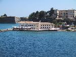 | 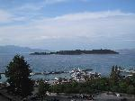 |  |
||
| 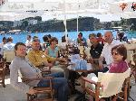 | 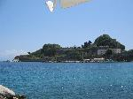 | 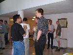 | ||
| 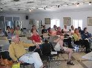 | 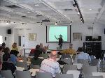 | 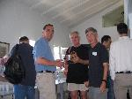 | 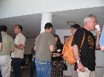 | 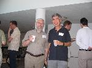 |
| 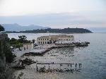 | 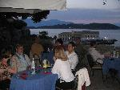 | 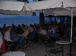 | 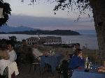 | 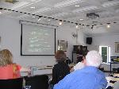 |
| 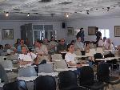 | 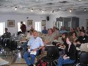 | 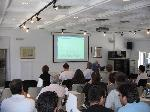 | 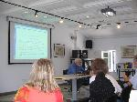 | |
| 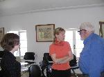 | 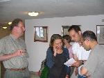 | 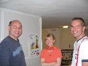 | 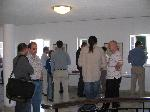 | 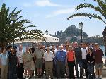 |
Please click on the picture to enlarge it.
| 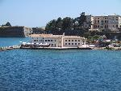 | 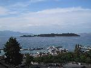 | |
||
| 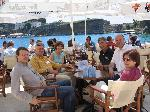 | 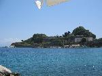 | 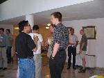 | ||
| 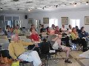 | 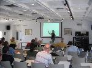 | 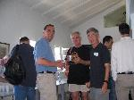 | 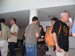 | 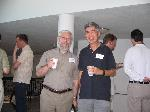 |
| 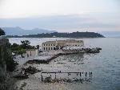 | 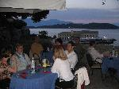 | 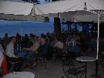 | 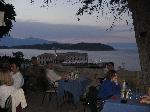 | 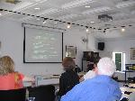 |
| 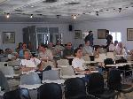 | 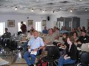 | 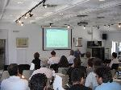 | 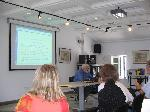 | |
| 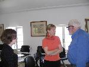 | 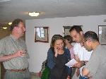 | 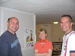 | 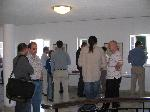 | 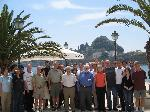 |
| 09.00 - 10.00 | Conceptual Spaces as a Semantics for Nonmontonic Reasoning Peter Gärdenfors (Invited Talk) |
| 10.00 - 10.30 | Complex procedures instantiated by their proper parts Boris Hennig |
| 10.30 - 11.00 | |
| 11.00 - 11.30 | Iterated Belief Revision, Revised Yi Jin, Michael Thielscher |
| 11.30 - 12.00 | On the Logic of Merging: Quota and Gmin Merging Operators Olivier Gauwin, Sébastien Konieczny, Pierre Marquis |
| 12.00 - 12.30 | Iterated Belief Merging as Conciliation Operators Patricia Everaere, Sébastien Konieczny, Pierre Marquis |
| 12.30 - 14.30 | |
| 14.30 - 15.00 | An Argumentation Framework for Merging Conflicting Knowledge Bases: The Prioritized Case Leila Amgoud, Souhila Kaci |
| 15.00 - 15.30 | Modular-E: an Elaboration Tolerant Approach to the Ramification and Qualification Problems Antonis Kakas, Loizos Michael, Rob Miller |
| 15.30 - 16.00 | Causality and Counterfactuals in the Situation Calculus Mark Hopkins, Judea Pearl |
| 16.00 - 16.30 | |
| 16.30 - 17.00 | Semantics for a useful fragment of the situation calculus Gerhard Lakemeyer, Hector J. Levesque |
| 17.00 - 17.30 | Action Invariants and System Constraints in STRIPS Norman Foo, Pavlos Peppas, Yan Zhang |
| 09.00 - 10.00 | Drosophila, Challenge Problems, and the Furtherance of Formal Commonsense
Reasoning Leora Morgenstern (Invited Talk) |
| 10.00 - 10.30 | On the reasoning of real-world agents: Toward a semantics for active logic Michael L. Anderson, Walid Gomaa, John Grant, Don Perlis |
| 10.30 - 11.00 | |
| 11.00 - 11.30 | Specifying and Generating Preferred Plans Meghyn Bienvenu, Sheila McIlraith |
| 11.30 - 12.00 | A General Framework for Expressing Preferences in Causal Reasoning and Planning James P. Delgrande, Torsten Schaub, Hans Tompits |
| 12.00 - 12.30 | A Causal Theory of Abduction Alexander Bochman |
| 12.30 - 14.30 | |
| 14.30 - 15.00 | Interpreting Golog Programs in Flux Stephan Schiffel, Michael Thielscher |
| 15.00 - 15.30 | Representing Flexible Temporal Behaviors in the Situation Calculus Alberto Finzi, Fiora Pirri |
| 15.30 - 16.00 | Goal Change Steven Shapiro, Yves Lespérance, Hector J. Levesque |
| 16.00 - 16.30 | |
| 16.30 - 17.00 | Knowledge Integration for Description Logics Thomas Meyer, Kevin Lee, Richard Booth |
| 17.00 - 17.30 | Updating Description Logics using the AGM Theory Giorgos Flouris, Dimitris Plexousakis, Grigoris Antoniou |
| 20.30 - 23.00 | John McCarthy (Invited Talk) |
| 09.00 - 09.30 | Encoding Knowledge of Commonsense Psychology Jerry R. Hobbs, Andrew S. Gordon |
| 09.30 - 10.00 | Towards an Ontology of Information Structure Jerry R. Hobbs |
| 10.00 - 10.30 | Decision-Theoretic Deliberation in Resource Bounded Self-Aware Agents Guido Boella, Joris Hulstijn, Leendert van der Torre |
| 10.30 - 11.00 | |
| 11.00 - 11.30 | A First-Order Axiomatization of the Surprise Birthday Present Problem Leora Morgenstern |
| 11.30 - 12.00 | A Framework for Commonsense Knowledge Retrieval Phil Oertel, Eyal Amir |
| 12.00 - 12.30 | A novel approach for updates based on the notion of minimal generalized answer sets Fernando Zacarías, Mauricio Osorio, Juan Carlos Acosta Guadarrama, Jürgen Dix |
| 12.30 - 14.30 | |
| 14.30 - 15.00 | First Order Logical Filtering Afsaneh Shirazi, Eyal Amir |
| 15.00 - 15.30 | Forgetting literals with varying propositional symbols Yves Moinard |
| 15.30 - 16.00 | DR-Prolog: A System for Reasoning with Rules and Ontologies on the Semantic Web Grigoris Antoniou, Antonis Bikakis |
| 16.00 - 16.30 | |
| 16.30 - 17.00 | Tractable Reasoning with Incomplete Knowledge in Dynamic Systems Yongmei Liu, Hector J. Levesque |
| 17.00 - 17.30 | Tractable Reasoning in First-Order Knowledge Bases with Disjunctive Information Yongmei Liu, Hector J. Levesque |
Peter Gärdenfors
University of Lund
Title: Conceptual Spaces as a Semantics for Nonmontonic Reasoning
Abstract: First I will argue that nonmonotonic reasoning is mainly about the nomonotonicy of concepts, rather than the nomonotonicity of sentences. Then I shall present conceptual spaces as a tool for representing concepts. The central part of the talk will be to show that many aspects of nonmontonic reasoning can be explained if grounded in a conceptual space semantics.
Pat Hayes (Unable to Attend)
University of West Florida
Title: Uncommon Sense
Abstract: Using logic to formalize common sense was the topic of one of the first AI documents ever written (McCarthy 1959), and we now have over 45 years of progress to look back on. The view is not encouraging. We are still struggling to handle problems which young children find so trivial as to be below the horizon of conscious effort; and yet computers now routinely play superb chess, recognize faces, control spacecraft and solve challenging industrial-scale problems. AI is doing well, but "logical common sense" is stuck, I suggest, in a dead end, where progress is essentially stymied by old problems that should have been treated as warnings rather than as posing research goals to be solved. This paper attempts to diagnose what went wrong, and suggest some alternative ways in which the field might make better progress.
John McCarthy
Stanford University
Title: Simple Deterministic Free Will
Leora Morgenstern
IBM Watson Research
Title: Drosophila, Challenge Problems, and the Furtherance of Formal Commonsense Reasoning
Paper Submission Deadline: February 8, 2005
Paper Notification: March 14, 2005
Camera Ready Papers Due: March 28, 2005
Symposium: May 22 - 24, 2005
Special rates are available for the participants of CommonSense-05 at the following hotels in Corfu, both of which are a pleasant 10min walk from the symposium venue. You can make a reservation by contacting the hotel directly and quoting "CommonSense-05" to get the special rates.
Corfu is a popular destination in May and there are only limited rooms available, so please make your reservation as soon as possible. The following prices are valid only for bookings made before 22 April 2005.
| Hotel | Category | Single Room | Double Room | Telephone | |
| Cavalieri Hotel | 4 Stars | 75€ | 90€ | +30-26610-39041 | info@cavalieri-hotel.com |
| Bella Venezia Hotel | 3 Stars | 60€ | 72€ | +30-26610-46500 | belvenht@hol.gr |
Regarding accommodation, apart from Cavalieri Hotel, there is an even better hotel (5 stars) called Corfu Palace Hotel, which is also about 15 minutes walk from the conference venue.
Corfu (or "Kerkyra") is one of the most beautiful Greek islands, located approximately 400km northwest of Athens. The capital of the island, where the Symposium will be held, is also called Corfu, while a number of pictorial villages are spread throughout the island. The day before our symposium starts, i.e. on the 21st of May, Corfu celebrates its unification with the rest of Greece (it took place in 1864) and there will be a lot of (mostly traditional) festivities that day.
One can reach the island by plane, or by boat:
There are daily domestic flights to Corfu from Athens and Thessalonica. The airport is located 3 kilometres to the south of Corfu-city. During peak season there are also charter flights connecting Corfu directly with various cities in Europe.
Upon arrival at Athens' airport "Eleftherios Venizelos", one can use the metro to get to the inter-city bus station, and then choose one of the following routes to Corfu:
Apart from Patras and Igoumenitsa, Corfu is also connected by sea with Italy (Brindissi, Bari, Ancona, and Venice).
the symposium venue; address: Faliraki, Pyli Agios Nicolaos, Kerkyra (Corfu)
“Faliraki” is the popular name given to the St. Nicholas Baths complex , which was founded in Byzantine times. The Church of St. Nicholas , which was probably built in 1414 , forms part of this group of buildings. Following their renovation in 1995, the offices of the Municipal Development Enterprise (ANEDK) were relocated in the complex, which is also used for events such as conferences, seminars and exhibitions.
Faliraki is a pleasant 5 minutes walk from Spianada square (at the centre of Corfu town). Walking to the north along Kapodistriou Str, (which later becomes Eleftherias Str) you pass through an arch (part of the Palace of Saint Michael and Saint George) and after about two hundred meter you will see to your right the Agios Nikolaos Gate leading to Faliraki (right at the sea front).
We request all participants to pre-register by sending an email with name and affiliation to Pavlos Peppas no later than May, 9th, 2005.
The conference fee is 130 EUR (regular) and 90 EUR (full-time students). The fee includes free use of the conference venue and equipment, conference documentation, and coffee breaks. The regular fee also includes the conference dinner. Students should bring a proof of their status to Corfu.
The preferred method of payment is by money transfer to
Bank: National Bank of Greece
Account Name: Research Committee, University of Patras
Account Number: 229/54000232
Reference Code: B523
Please make sure that the reference code is recorded. Alternatively, the fee can be paid on-site.
Sheila McIlraith
Dept of Computer Science
University of Toronto
6 King's College Road
Toronto, ON, Canada M4K 2W1
Pavlos Peppas
Dept of Business Administration
University of Patras
Patras 256 00, Greece
Michael Thielscher
Dept of Computer Science
Dresden University of Technology
01062 Dresden, Germany
Eyal Amir, Uni. of Illinois at Urbana-Champaign, USA
Michael L. Anderson, University of Maryland, USA
Grigoris Antoniou, University of Crete, Greece
Chitta Baral, Arizona State University, USA
Gerd Brewka, University of Leipzig, Germany
Vinay Chaudhri, SRI, USA
Ernest Davis, NYU, USA
Patrick Doherty, University of Linkoping, Sweden
Esra Erdem, Technical University of Wien, Austria
Alfredo Gabaldon, NICTA, Sydney, Australia
Nicola Guarino, ISTC-CNR Trento, Italy
Jerry Hobbs, USC/ISI, USA
Antonis Kakas, University of Cyprus, Cyprus
Lefteris Kirousis, University of Patras and CTI, Greece
Jerome Lang, IRIT, France
Vladimir Lifschitz, UT at Austin, USA
Fangzhen Lin, Hong Kong UST
Yves Martin, Dresden Uni. of Technology, Germany
John-Jules Meyer, University of Utrecht, The Netherlands
Leora Morgenstern, IBM, USA
Don Perlis, University of Maryland, USA
Fiora Pirri, University of Rome La Sapienza, Italy
Murray Shanahan, Imperial College, UK
Stuart Shapiro, SUNY at Buffalo, USA
Son Cao Tran, New Mexico State Uni., USA
Chris Welty, IBM T.J. Watson, USA
Mary-Anne Williams, Uni. of Technology, Sydney, Australia
{kind=link}
{kind=link}
{kind=link}
{kind=link}
{kind=link}
{kind=link}
{kind=link}
{kind=link}
{kind=link}
{kind=link}
{kind=link}
{kind=link}
{kind=link}
{kind=link}
{kind=link}
{kind=link}
{kind=link}
{kind=link}
{kind=link}
{kind=link}
{kind=link}
{kind=link}
{kind=link}
{kind=link}
{kind=link}
{kind=link}
{kind=link}
{kind=link}
{kind=link}
{kind=link}